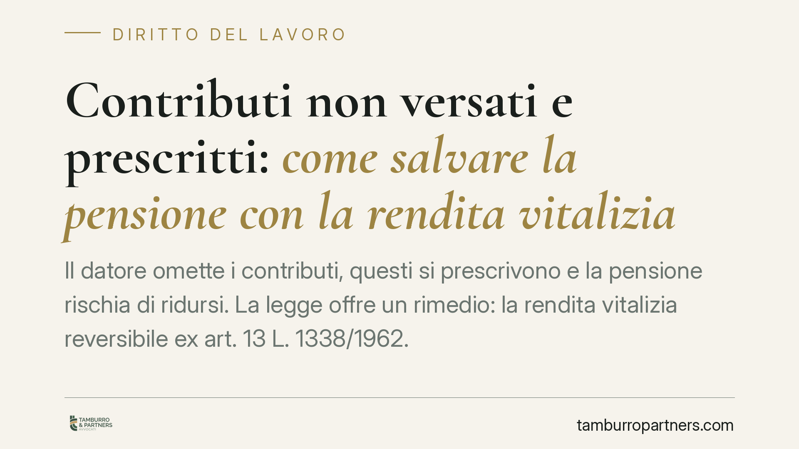

Contributi non versati e prescritti: come salvare la pensione con la rendita vitalizia
Il datore omette i contributi, questi si prescrivono e la pensione rischia di ridursi. La legge offre un rimedio: la rendita vitalizia reversibile ex art. 13 L. 1338/1962. Il Tribunale di Rovigo (sent. n. 152/2026) ha precisato quali prove servono per ottenerla, distinguendo tra elementi che richiedono documenti e quelli dimostrabili con ogni mezzo.

Il problema: contributi omessi e prescritti
I contributi previdenziali non versati dal datore incidono direttamente sulla futura pensione del lavoratore. Finché non sono prescritti, l'INPS può recuperarli. Ma il credito contributivo si prescrive in cinque anni (art. 3, comma 9, L. 335/1995). Superato quel termine, l'omissione diventa in linea di principio irrecuperabile e il lavoratore rischia di vedersi decurtata la prestazione previdenziale.
Qui interviene il legislatore con uno strumento specifico, spesso ignorato: la rendita vitalizia reversibile.
Inquadramento normativo
L'art. 13 della L. 6 febbraio 1962, n. 1338 consente di sanare gli effetti dell'omissione contributiva ormai prescritta. Il datore di lavoro può costituire presso l'INPS una rendita vitalizia reversibile pari alla pensione (o quota di pensione) che sarebbe spettata al lavoratore in relazione ai contributi omessi.
Se il datore non provvede, il comma 5 dello stesso articolo riconosce al lavoratore la facoltà di sostituirsi, versando egli stesso la riserva matematica e conservando il diritto di rivalsa verso il datore inadempiente. Per attivare questo meccanismo occorre però una prova rigorosa del rapporto di lavoro e dei contributi non versati.
È proprio sul contenuto di questa prova che si concentra la pronuncia del Tribunale di Rovigo.
Cosa ha chiarito il Tribunale di Rovigo
Con la sentenza n. 152/2026 il Tribunale ha operato una distinzione che ha risvolti pratici decisivi. Il regime probatorio non è uniforme: cambia a seconda dell'elemento da dimostrare.
Prova documentale (rigida). L'esistenza del rapporto di lavoro e la sua natura subordinata devono risultare da documenti scritti aventi data certa. Non bastano testimonianze o presunzioni. Servono buste paga, contratti, comunicazioni obbligatorie, corrispondenza, documentazione fiscale. La ragione è di sistema: si vuole evitare la creazione artificiosa di posizioni previdenziali a carico dell'ente pubblico.
Prova libera (ogni mezzo). La durata del rapporto e l'ammontare della retribuzione possono invece essere provati con ogni mezzo, comprese le testimonianze. Una volta accertato per iscritto "che" il rapporto è esistito e "che" era subordinato, il "quanto" e il "per quanto tempo" seguono regole probatorie ordinarie.
È una lettura coerente con l'orientamento della Cassazione, ma la sentenza ha il merito di renderla operativa in modo netto.
Implicazioni pratiche per il lavoratore
La distinzione non è accademica. Molti lavoratori che scoprono i buchi contributivi solo in prossimità della pensione dispongono di ricordi e di qualche testimone, ma non conservano documenti. Con questa impostazione, senza almeno un principio di prova scritta della natura subordinata del rapporto, l'azione ex art. 13 è destinata al rigetto.
Al contrario, chi ha custodito anche pochi documenti chiave parte da una posizione solida: sugli aspetti quantitativi potrà integrare con altri elementi.
È dunque essenziale muoversi per tempo, prima che i documenti vadano perduti e prima che eventuali testimoni non siano più reperibili.
Cosa fare in concreto
- Verificate subito l'estratto conto contributivo INPS. Individuate i periodi scoperti e confrontateli con la storia lavorativa reale.
- Recuperate e conservate ogni documento scritto con data certa: buste paga, contratti, lettere di assunzione, CU, comunicazioni obbligatorie. Sono la base indispensabile.
- Ricostruite durata e retribuzione raccogliendo anche prove non documentali: nominativi di colleghi, bonifici, agende, e-mail.
- Sollecitate formalmente il datore a costituire la rendita ex art. 13, valutando l'azione sostitutiva con rivalsa se resta inerte.
- Agite prima della domanda di pensione, per evitare che la prestazione sia liquidata su una base contributiva incompleta.
La rendita vitalizia reversibile è un rimedio efficace, ma vive interamente sulla qualità della prova. Consigliamo di impostare la documentazione con largo anticipo rispetto al pensionamento e di valutare la fattibilità dell'azione caso per caso.
---
*Contributo informativo a cura di Tamburro & Partners - Avv. Giuseppe Tamburro. Non costituisce parere legale.*
Ogni storia di lavoro ha i suoi tempi.
Se gestisci HR e vuoi un confronto su contenzioso, ispezioni o licenziamenti, scrivi allo studio. Ti rispondiamo entro un giorno lavorativo.